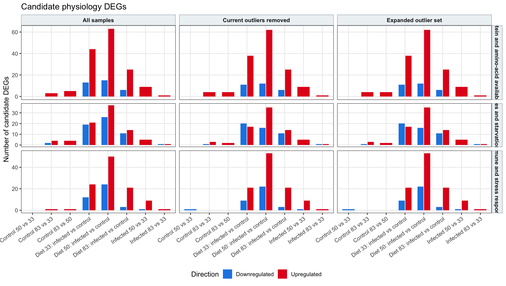

Last updated: 2026-07-15
Checks: 6 1
Knit directory:
gregaria-diet-infection-interaction/
This reproducible R Markdown analysis was created with workflowr (version 1.7.2). The Checks tab describes the reproducibility checks that were applied when the results were created. The Past versions tab lists the development history.
The R Markdown is untracked by Git. To know which version of the R
Markdown file created these results, you’ll want to first commit it to
the Git repo. If you’re still working on the analysis, you can ignore
this warning. When you’re finished, you can run
wflow_publish to commit the R Markdown file and build the
HTML.
Great job! The global environment was empty. Objects defined in the global environment can affect the analysis in your R Markdown file in unknown ways. For reproduciblity it’s best to always run the code in an empty environment.
The command set.seed(20260427) was run prior to running
the code in the R Markdown file. Setting a seed ensures that any results
that rely on randomness, e.g. subsampling or permutations, are
reproducible.
Great job! Recording the operating system, R version, and package versions is critical for reproducibility.
Nice! There were no cached chunks for this analysis, so you can be confident that you successfully produced the results during this run.
Great job! Using relative paths to the files within your workflowr project makes it easier to run your code on other machines.
Great! You are using Git for version control. Tracking code development and connecting the code version to the results is critical for reproducibility.
The results in this page were generated with repository version bd50e92. See the Past versions tab to see a history of the changes made to the R Markdown and HTML files.
Note that you need to be careful to ensure that all relevant files for
the analysis have been committed to Git prior to generating the results
(you can use wflow_publish or
wflow_git_commit). workflowr only checks the R Markdown
file, but you know if there are other scripts or data files that it
depends on. Below is the status of the Git repository when the results
were generated:
Ignored files:
Ignored: analysis/output/
Ignored: code/R_timecourse_reference/
Ignored: data/raw_read_counts/.DS_Store
Ignored: data/raw_read_counts/DESeq2_output/overlap_DEGs/
Ignored: data/reference/
Ignored: output/rmd_runs/all-samples-deseq2-interaction-model_20260715-123859/
Ignored: output/rmd_runs/all-samples-deseq2-interaction-model_20260715-130121/
Ignored: output/rmd_runs/all-samples-diet-pairwise-deg_All_20260715-123921/
Ignored: output/rmd_runs/all-samples-diet-pairwise-deg_All_20260715-130143/
Ignored: output/rmd_runs/all-samples-infection-within-diet-deg_20260715-123940/
Ignored: output/rmd_runs/all-samples-infection-within-diet-deg_20260715-130202/
Ignored: output/rmd_runs/count-qc-exploration_20260715-123853/
Ignored: output/rmd_runs/count-qc-exploration_20260715-130115/
Ignored: output/rmd_runs/deg-logical-set-construction_20260715-124354/
Ignored: output/rmd_runs/deg-overlap-prioritization_20260715-124947/
Ignored: output/rmd_runs/deg-sample-filter-scenarios_20260715-124135/
Ignored: output/rmd_runs/deg-sample-filter-scenarios_20260715-130357/
Ignored: output/rmd_runs/deseq2-interaction-model_20260715-124821/
Ignored: output/rmd_runs/diet-pairwise-deg_All_20260715-124842/
Ignored: output/rmd_runs/go-term-enrichment_20260715-124306/
Ignored: output/rmd_runs/infection-within-diet-deg_20260715-124901/
Ignored: output/rmd_runs/outlier-sensitivity_20260715-124646/
Ignored: output/rmd_runs/outlier-sensitivity_20260715-130514/
Ignored: output/rmd_runs/outliers-load-enrichment_20260715-124722/
Ignored: output/rmd_runs/outliers-load-enrichment_20260715-130550/
Ignored: output/rmd_runs/outliers-removed-deseq2-interaction-model_20260715-124024/
Ignored: output/rmd_runs/outliers-removed-deseq2-interaction-model_20260715-130246/
Ignored: output/rmd_runs/outliers-removed-diet-pairwise-deg_All_20260715-124040/
Ignored: output/rmd_runs/outliers-removed-diet-pairwise-deg_All_20260715-130302/
Ignored: output/rmd_runs/outliers-removed-infection-within-diet-deg_20260715-124056/
Ignored: output/rmd_runs/outliers-removed-infection-within-diet-deg_20260715-130318/
Ignored: output/rmd_runs/phase-signature-overlap-no-outliers_20260715-124605/
Ignored: output/rmd_runs/phase-signature-overlap_20260715-124523/
Ignored: output/rmd_runs/physiology-candidate-genes_20260715-124250/
Ignored: output/rmd_runs/publication-figures_20260715-124350/
Ignored: output/rmd_runs/study-design-data_20260715-123844/
Ignored: output/rmd_runs/study-design-data_20260715-130107/
Ignored: output/rmd_runs/workflow-reproducibility_20260715-123846/
Ignored: output/rmd_runs/workflow-reproducibility_20260715-130109/
Ignored: scripts/.RData
Ignored: scripts/.Rhistory
Untracked files:
Untracked: analysis/12-deg-sample-filter-scenarios.Rmd
Untracked: analysis/13-physiology-candidate-genes.Rmd
Untracked: analysis/14-all-samples-deseq2-interaction-model.Rmd
Untracked: analysis/15-all-samples-diet-pairwise-deg.Rmd
Untracked: analysis/16-all-samples-infection-within-diet-deg.Rmd
Untracked: analysis/17-outliers-removed-deseq2-interaction-model.Rmd
Untracked: analysis/18-outliers-removed-diet-pairwise-deg.Rmd
Untracked: analysis/19-outliers-removed-infection-within-diet-deg.Rmd
Untracked: analysis/20-phase-signature-overlap.Rmd
Untracked: analysis/21-phase-signature-overlap-no-outliers.Rmd
Untracked: analysis/22-deg-logical-set-construction.Rmd
Untracked: code/README.timecourse-snakemake-source.md
Untracked: code/Snakefile
Untracked: code/Snakefile.eggnog_annotations
Untracked: code/Snakefile.metatranscriptomics_qc
Untracked: code/Snakefile.rnaseq_variants
Untracked: code/__pycache__/
Untracked: code/cluster.json
Untracked: code/config.smk
Untracked: code/pilot/
Untracked: code/rules/
Untracked: code/run_eggnog_desertlocustr.sh
Untracked: code/scripts/
Untracked: code/snakemake.eggnog.slurm
Untracked: code/snakemake.fatbody_pilot.slurm
Untracked: code/snakemake.metatx.slurm
Untracked: code/snakemake.slurm
Untracked: data/external/
Untracked: data/raw_read_counts/03-FAT-DESeq2/
Untracked: data/raw_read_counts/03-gregaria-DESeq2/
Unstaged changes:
Modified: .DS_Store
Modified: analysis/.DS_Store
Modified: analysis/10-go-term-enrichment.Rmd
Modified: analysis/_site.yml
Modified: analysis/index.Rmd
Modified: analysis/site-style.css
Modified: code/README.md
Modified: data/.DS_Store
Modified: output/.DS_Store
Modified: output/rmd_runs/.DS_Store
Deleted: output/rmd_runs/count-qc-exploration_20260704-001530/filter_summary.csv
Deleted: output/rmd_runs/count-qc-exploration_20260704-001530/library_size.csv
Deleted: output/rmd_runs/count-qc-exploration_20260704-001530/pca_vst.png
Deleted: output/rmd_runs/count-qc-exploration_20260704-001530/sample_distance_heatmap.png
Deleted: output/rmd_runs/count-qc-exploration_20260704-001530/sessionInfo.txt
Deleted: output/rmd_runs/deg-overlap-prioritization_20260704-001704/DESeq2_Control_diet_33_vs_50.csv
Deleted: output/rmd_runs/deg-overlap-prioritization_20260704-001704/DESeq2_Control_diet_33_vs_83.csv
Deleted: output/rmd_runs/deg-overlap-prioritization_20260704-001704/DESeq2_Control_diet_50_vs_83.csv
Deleted: output/rmd_runs/deg-overlap-prioritization_20260704-001704/DESeq2_Infected_diet_33_vs_50.csv
Deleted: output/rmd_runs/deg-overlap-prioritization_20260704-001704/DESeq2_Infected_diet_33_vs_83.csv
Deleted: output/rmd_runs/deg-overlap-prioritization_20260704-001704/DESeq2_Infected_diet_50_vs_83.csv
Deleted: output/rmd_runs/deg-overlap-prioritization_20260704-001704/condition_specific_diet_pairwise_summary.csv
Deleted: output/rmd_runs/deg-overlap-prioritization_20260704-001704/deg_intersection_size_barplot.png
Deleted: output/rmd_runs/deg-overlap-prioritization_20260704-001704/deg_intersection_summary.csv
Deleted: output/rmd_runs/deg-overlap-prioritization_20260704-001704/deg_overlap_matrix.png
Deleted: output/rmd_runs/deg-overlap-prioritization_20260704-001704/deg_presence_absence_matrix.csv
Deleted: output/rmd_runs/deg-overlap-prioritization_20260704-001704/deg_set_size_barplot.png
Deleted: output/rmd_runs/deg-overlap-prioritization_20260704-001704/deg_set_summary.csv
Deleted: output/rmd_runs/deg-overlap-prioritization_20260704-001704/deg_upsetr_current_sets.png
Deleted: output/rmd_runs/deg-overlap-prioritization_20260704-001704/genes_seen_in_two_or_more_sets.csv
Deleted: output/rmd_runs/deg-overlap-prioritization_20260704-001704/sessionInfo.txt
Deleted: output/rmd_runs/deg-overlap-prioritization_20260704-001704/significant_genes_Control_diet_33_vs_50.txt
Deleted: output/rmd_runs/deg-overlap-prioritization_20260704-001704/significant_genes_Control_diet_33_vs_83.txt
Deleted: output/rmd_runs/deg-overlap-prioritization_20260704-001704/significant_genes_Control_diet_50_vs_83.txt
Deleted: output/rmd_runs/deg-overlap-prioritization_20260704-001704/significant_genes_Infected_diet_33_vs_50.txt
Deleted: output/rmd_runs/deg-overlap-prioritization_20260704-001704/significant_genes_Infected_diet_33_vs_83.txt
Deleted: output/rmd_runs/deg-overlap-prioritization_20260704-001704/significant_genes_Infected_diet_50_vs_83.txt
Deleted: output/rmd_runs/deg-overlap-prioritization_20260704-001704/venn_broad_deg_families.png
Deleted: output/rmd_runs/deg-overlap-prioritization_20260704-001704/venn_diet_degs_controls.png
Deleted: output/rmd_runs/deg-overlap-prioritization_20260704-001704/venn_diet_degs_infected.png
Deleted: output/rmd_runs/deg-overlap-prioritization_20260704-001704/venn_infection_degs_by_diet.png
Deleted: output/rmd_runs/deseq2-interaction-model_20260704-001535/all_model_coefficients.csv
Deleted: output/rmd_runs/deseq2-interaction-model_20260704-001535/deseq2_coefficients.txt
Deleted: output/rmd_runs/deseq2-interaction-model_20260704-001535/interaction_coefficients.csv
Deleted: output/rmd_runs/deseq2-interaction-model_20260704-001535/interaction_model_deg_count_barplot.png
Deleted: output/rmd_runs/deseq2-interaction-model_20260704-001535/interaction_model_direction_counts.csv
Deleted: output/rmd_runs/deseq2-interaction-model_20260704-001535/interaction_model_pca.png
Deleted: output/rmd_runs/deseq2-interaction-model_20260704-001535/sessionInfo.txt
Deleted: output/rmd_runs/deseq2-interaction-model_20260704-001535/significant_gene_counts.csv
Deleted: output/rmd_runs/diet-pairwise-deg_All_20260704-001558/DESeq2_33_vs_50.csv
Deleted: output/rmd_runs/diet-pairwise-deg_All_20260704-001558/DESeq2_33_vs_83.csv
Deleted: output/rmd_runs/diet-pairwise-deg_All_20260704-001558/DESeq2_50_vs_83.csv
Deleted: output/rmd_runs/diet-pairwise-deg_All_20260704-001558/all_diet_pairwise_results.csv
Deleted: output/rmd_runs/diet-pairwise-deg_All_20260704-001558/diet_pairwise_deg_count_barplot.png
Deleted: output/rmd_runs/diet-pairwise-deg_All_20260704-001558/diet_pairwise_direction_counts.csv
Deleted: output/rmd_runs/diet-pairwise-deg_All_20260704-001558/diet_pairwise_summary.csv
Deleted: output/rmd_runs/diet-pairwise-deg_All_20260704-001558/sessionInfo.txt
Deleted: output/rmd_runs/diet-pairwise-deg_All_20260704-001558/significant_genes_33_vs_50.txt
Deleted: output/rmd_runs/diet-pairwise-deg_All_20260704-001558/significant_genes_33_vs_83.txt
Deleted: output/rmd_runs/diet-pairwise-deg_All_20260704-001558/significant_genes_50_vs_83.txt
Deleted: output/rmd_runs/infection-within-diet-deg_20260704-001618/DESeq2_infected_vs_control_diet_33.csv
Deleted: output/rmd_runs/infection-within-diet-deg_20260704-001618/DESeq2_infected_vs_control_diet_50.csv
Deleted: output/rmd_runs/infection-within-diet-deg_20260704-001618/DESeq2_infected_vs_control_diet_83.csv
Deleted: output/rmd_runs/infection-within-diet-deg_20260704-001618/all_infection_within_diet_results.csv
Deleted: output/rmd_runs/infection-within-diet-deg_20260704-001618/curated_immune_nutrition_deg_barplot.png
Deleted: output/rmd_runs/infection-within-diet-deg_20260704-001618/curated_immune_nutrition_deg_summary.csv
Deleted: output/rmd_runs/infection-within-diet-deg_20260704-001618/curated_immune_nutrition_gene_list.csv
Deleted: output/rmd_runs/infection-within-diet-deg_20260704-001618/curated_infection_deg_heatmap_genes.csv
Deleted: output/rmd_runs/infection-within-diet-deg_20260704-001618/curated_infection_deg_vst_heatmap.png
Deleted: output/rmd_runs/infection-within-diet-deg_20260704-001618/curated_infection_deg_vst_heatmap_labeled.png
Deleted: output/rmd_runs/infection-within-diet-deg_20260704-001618/diet_33_infection_deg_pca.png
Deleted: output/rmd_runs/infection-within-diet-deg_20260704-001618/diet_33_infection_deg_pca_centroids.csv
Deleted: output/rmd_runs/infection-within-diet-deg_20260704-001618/diet_33_infection_deg_pca_scores.csv
Deleted: output/rmd_runs/infection-within-diet-deg_20260704-001618/diet_33_infection_deg_vst_heatmap.png
Deleted: output/rmd_runs/infection-within-diet-deg_20260704-001618/diet_33_infection_ma_plot.png
Deleted: output/rmd_runs/infection-within-diet-deg_20260704-001618/diet_50_infection_deg_pca.png
Deleted: output/rmd_runs/infection-within-diet-deg_20260704-001618/diet_50_infection_deg_pca_centroids.csv
Deleted: output/rmd_runs/infection-within-diet-deg_20260704-001618/diet_50_infection_deg_pca_scores.csv
Deleted: output/rmd_runs/infection-within-diet-deg_20260704-001618/diet_50_infection_deg_vst_heatmap.png
Deleted: output/rmd_runs/infection-within-diet-deg_20260704-001618/diet_50_infection_ma_plot.png
Deleted: output/rmd_runs/infection-within-diet-deg_20260704-001618/diet_83_infection_deg_pca.png
Deleted: output/rmd_runs/infection-within-diet-deg_20260704-001618/diet_83_infection_deg_pca_centroids.csv
Deleted: output/rmd_runs/infection-within-diet-deg_20260704-001618/diet_83_infection_deg_pca_scores.csv
Deleted: output/rmd_runs/infection-within-diet-deg_20260704-001618/diet_83_infection_deg_vst_heatmap.png
Deleted: output/rmd_runs/infection-within-diet-deg_20260704-001618/diet_83_infection_ma_plot.png
Deleted: output/rmd_runs/infection-within-diet-deg_20260704-001618/infection_deg_burden_by_biotype_counts.csv
Deleted: output/rmd_runs/infection-within-diet-deg_20260704-001618/infection_deg_burden_by_biotype_diverging_barplot.png
Deleted: output/rmd_runs/infection-within-diet-deg_20260704-001618/infection_deg_burden_diverging_barplot.png
Deleted: output/rmd_runs/infection-within-diet-deg_20260704-001618/infection_deg_burden_diverging_counts.csv
Deleted: output/rmd_runs/infection-within-diet-deg_20260704-001618/infection_within_diet_deg_count_barplot.png
Deleted: output/rmd_runs/infection-within-diet-deg_20260704-001618/infection_within_diet_direction_counts.csv
Deleted: output/rmd_runs/infection-within-diet-deg_20260704-001618/infection_within_diet_summary.csv
Deleted: output/rmd_runs/infection-within-diet-deg_20260704-001618/pca_centroid_infection_arrows.csv
Deleted: output/rmd_runs/infection-within-diet-deg_20260704-001618/pca_centroid_infection_arrows.png
Deleted: output/rmd_runs/infection-within-diet-deg_20260704-001618/sessionInfo.txt
Deleted: output/rmd_runs/infection-within-diet-deg_20260704-001618/significant_genes_infection_diet_33.txt
Deleted: output/rmd_runs/infection-within-diet-deg_20260704-001618/significant_genes_infection_diet_50.txt
Deleted: output/rmd_runs/infection-within-diet-deg_20260704-001618/significant_genes_infection_diet_83.txt
Deleted: output/rmd_runs/infection-within-diet-deg_20260704-001618/vst_pca_condition_centroids.csv
Deleted: output/rmd_runs/infection-within-diet-deg_20260704-001618/vst_pca_condition_centroids.png
Deleted: output/rmd_runs/infection-within-diet-deg_20260704-001618/vst_pca_sample_scores.csv
Deleted: output/rmd_runs/infection-within-diet-deg_20260704-001618/vst_top_variable_gene_heatmap.png
Deleted: output/rmd_runs/outlier-sensitivity_20260704-001847/deg_burden_full_vs_no_outliers.csv
Deleted: output/rmd_runs/outlier-sensitivity_20260704-001847/deg_burden_full_vs_no_outliers.png
Deleted: output/rmd_runs/outlier-sensitivity_20260704-001847/deg_retained_lost_gained.csv
Deleted: output/rmd_runs/outlier-sensitivity_20260704-001847/deg_retained_lost_gained.png
Deleted: output/rmd_runs/outlier-sensitivity_20260704-001847/log2fc_stability_full_vs_no_outliers.csv
Deleted: output/rmd_runs/outlier-sensitivity_20260704-001847/log2fc_stability_full_vs_no_outliers.png
Deleted: output/rmd_runs/outlier-sensitivity_20260704-001847/pca_full_vs_no_outliers.png
Deleted: output/rmd_runs/outlier-sensitivity_20260704-001847/pca_scores_full_vs_no_outliers.csv
Deleted: output/rmd_runs/outlier-sensitivity_20260704-001847/removed_samples.csv
Deleted: output/rmd_runs/outlier-sensitivity_20260704-001847/sample_counts_by_group.csv
Deleted: output/rmd_runs/outlier-sensitivity_20260704-001847/sessionInfo.txt
Deleted: output/rmd_runs/outlier-sensitivity_20260704-001847/within_diet_results_full_vs_no_outliers.csv
Deleted: output/rmd_runs/outliers-load-enrichment_20260704-001727/GO_TERM2GENE.csv
Deleted: output/rmd_runs/outliers-load-enrichment_20260704-001727/GO_TERM2NAME.csv
Deleted: output/rmd_runs/outliers-load-enrichment_20260704-001727/GO_enrichment_all_sets.csv
Deleted: output/rmd_runs/outliers-load-enrichment_20260704-001727/KEGG_pathway_TERM2GENE.csv
Deleted: output/rmd_runs/outliers-load-enrichment_20260704-001727/KEGG_pathway_enrichment_all_sets.csv
Deleted: output/rmd_runs/outliers-load-enrichment_20260704-001727/all_enrichment_results.csv
Deleted: output/rmd_runs/outliers-load-enrichment_20260704-001727/annotation_source_manifest.csv
Deleted: output/rmd_runs/outliers-load-enrichment_20260704-001727/annotation_summary.csv
Deleted: output/rmd_runs/outliers-load-enrichment_20260704-001727/coding_lncRNA_deg_barplot.png
Deleted: output/rmd_runs/outliers-load-enrichment_20260704-001727/coding_lncRNA_deg_counts.csv
Deleted: output/rmd_runs/outliers-load-enrichment_20260704-001727/eggNOG_GO_TERM2GENE.tsv
Deleted: output/rmd_runs/outliers-load-enrichment_20260704-001727/eggNOG_GO_TERM2NAME.tsv
Deleted: output/rmd_runs/outliers-load-enrichment_20260704-001727/eggNOG_GO_enrichment_by_ontology.png
Deleted: output/rmd_runs/outliers-load-enrichment_20260704-001727/eggNOG_GO_enrichment_with_ontology.csv
Deleted: output/rmd_runs/outliers-load-enrichment_20260704-001727/eggNOG_KEGG_pathway_TERM2GENE.tsv
Deleted: output/rmd_runs/outliers-load-enrichment_20260704-001727/enriched_term_overlap_heatmap.png
Deleted: output/rmd_runs/outliers-load-enrichment_20260704-001727/enriched_terms_seen_in_multiple_sets.csv
Deleted: output/rmd_runs/outliers-load-enrichment_20260704-001727/enrichment_deg_set_summary.csv
Deleted: output/rmd_runs/outliers-load-enrichment_20260704-001727/enrichment_dotplot_by_set.png
Deleted: output/rmd_runs/outliers-load-enrichment_20260704-001727/lncRNA_deg_table.csv
Deleted: output/rmd_runs/outliers-load-enrichment_20260704-001727/removed_outlier_samples.csv
Deleted: output/rmd_runs/outliers-load-enrichment_20260704-001727/sessionInfo.txt
Deleted: output/rmd_runs/publication-figures_20260704-001920/candidate_figure_inventory.csv
Deleted: output/rmd_runs/publication-figures_20260704-001920/candidate_panels/10_diet_33_infection_ma_plot.png
Deleted: output/rmd_runs/publication-figures_20260704-001920/candidate_panels/11_diet_50_infection_ma_plot.png
Deleted: output/rmd_runs/publication-figures_20260704-001920/candidate_panels/12_diet_83_infection_ma_plot.png
Deleted: output/rmd_runs/publication-figures_20260704-001920/candidate_panels/13_pca_vst.png
Deleted: output/rmd_runs/publication-figures_20260704-001920/candidate_panels/14_pca_vst.png
Deleted: output/rmd_runs/publication-figures_20260704-001920/candidate_panels/15_interaction_model_pca.png
Deleted: output/rmd_runs/publication-figures_20260704-001920/candidate_panels/16_interaction_model_pca.png
Deleted: output/rmd_runs/publication-figures_20260704-001920/candidate_panels/17_diet_33_infection_deg_pca.png
Deleted: output/rmd_runs/publication-figures_20260704-001920/candidate_panels/18_diet_50_infection_deg_pca.png
Deleted: output/rmd_runs/publication-figures_20260704-001920/candidate_panels/19_deg_upsetr_current_sets.png
Deleted: output/rmd_runs/publication-figures_20260704-001920/candidate_panels/1_sample_distance_heatmap.png
Deleted: output/rmd_runs/publication-figures_20260704-001920/candidate_panels/20_venn_broad_deg_families.png
Deleted: output/rmd_runs/publication-figures_20260704-001920/candidate_panels/21_venn_infection_degs_by_diet.png
Deleted: output/rmd_runs/publication-figures_20260704-001920/candidate_panels/22_deg_upsetr_current_sets.png
Deleted: output/rmd_runs/publication-figures_20260704-001920/candidate_panels/23_venn_broad_deg_families.png
Deleted: output/rmd_runs/publication-figures_20260704-001920/candidate_panels/24_venn_diet_degs_controls.png
Deleted: output/rmd_runs/publication-figures_20260704-001920/candidate_panels/25_25_25_25_25_25_Volcano_33_vs_50.pdf
Deleted: output/rmd_runs/publication-figures_20260704-001920/candidate_panels/26_26_26_26_26_26_Volcano_33_vs_50.png
Deleted: output/rmd_runs/publication-figures_20260704-001920/candidate_panels/27_27_27_27_27_27_Volcano_33_vs_83.pdf
Deleted: output/rmd_runs/publication-figures_20260704-001920/candidate_panels/28_28_28_28_28_28_Volcano_33_vs_83.png
Deleted: output/rmd_runs/publication-figures_20260704-001920/candidate_panels/29_29_29_29_29_29_Volcano_50_vs_83.pdf
Deleted: output/rmd_runs/publication-figures_20260704-001920/candidate_panels/2_sample_distance_heatmap.png
Deleted: output/rmd_runs/publication-figures_20260704-001920/candidate_panels/30_30_30_30_30_30_Volcano_50_vs_83.png
Deleted: output/rmd_runs/publication-figures_20260704-001920/candidate_panels/3_curated_infection_deg_vst_heatmap_labeled.png
Deleted: output/rmd_runs/publication-figures_20260704-001920/candidate_panels/4_curated_infection_deg_vst_heatmap.png
Deleted: output/rmd_runs/publication-figures_20260704-001920/candidate_panels/5_diet_33_infection_deg_vst_heatmap.png
Deleted: output/rmd_runs/publication-figures_20260704-001920/candidate_panels/6_diet_50_infection_deg_vst_heatmap.png
Deleted: output/rmd_runs/publication-figures_20260704-001920/candidate_panels/7_deg_overlap_matrix.png
Deleted: output/rmd_runs/publication-figures_20260704-001920/candidate_panels/8_deg_overlap_matrix.png
Deleted: output/rmd_runs/publication-figures_20260704-001920/candidate_panels/9_deg_overlap_matrix.png
Deleted: output/rmd_runs/publication-figures_20260704-001920/copied_candidate_panels.csv
Deleted: output/rmd_runs/publication-figures_20260704-001920/sessionInfo.txt
Deleted: output/rmd_runs/study-design-data_20260704-001519/library_size_by_sample.csv
Deleted: output/rmd_runs/study-design-data_20260704-001519/sessionInfo.txt
Deleted: output/rmd_runs/workflow-reproducibility_20260704-001522/hpc_to_workflowr_workflow.png
Deleted: output/rmd_runs/workflow-reproducibility_20260704-001522/package_status.csv
Deleted: output/rmd_runs/workflow-reproducibility_20260704-001522/sessionInfo.txt
Note that any generated files, e.g. HTML, png, CSS, etc., are not included in this status report because it is ok for generated content to have uncommitted changes.
There are no past versions. Publish this analysis with
wflow_publish() to start tracking its development.
This page tests the co-author hypothesis in a targeted way. Instead of starting from broad GO or KEGG enrichment labels, it searches the eggNOG annotation for genes plausibly involved in three insect-relevant processes:
This is a candidate-gene screen, not a formal enrichment test. It is designed to produce an interpretable gene list that can be checked manually and refined as we agree on more insect-specific marker genes.
knitr::opts_chunk$set(message = FALSE, warning = FALSE)
required <- c("dplyr", "tidyr", "stringr", "ggplot2", "forcats", "DT")
missing <- required[!vapply(required, requireNamespace, logical(1), quietly = TRUE)]
if (length(missing) > 0) {
stop("Install required packages before knitting: ", paste(missing, collapse = ", "))
}
project_dir <- normalizePath(".", mustWork = TRUE)
run_stamp <- format(Sys.time(), "%Y%m%d-%H%M%S")
out_dir <- file.path(project_dir, "output", "rmd_runs",
paste(params$output_tag, run_stamp, sep = "_"))
dir.create(out_dir, recursive = TRUE, showWarnings = FALSE)
counts_file <- file.path(project_dir, params$counts_file)
eggnog_file <- file.path(project_dir, params$eggnog_file)
gff_file <- file.path(project_dir, params$gff_file)
results_root <- file.path(project_dir, params$latest_results_root)
theme_colors <- c(
"Protein and amino-acid availability" = "#6F4AA8",
"Energy stores and starvation resistance" = "#2C7FB8",
"Immune and stress response" = "#C23B22"
)
direction_colors <- c("Upregulated" = "#E41A1C",
"Downregulated" = "#1E88E5")These keyword groups deliberately favor insect physiology terms and fat-body functions over broad pathway labels. The matched word is retained for each gene so the screen remains auditable.
candidate_terms <- tibble::tribble(
~theme, ~term_group, ~pattern,
"Protein and amino-acid availability", "Storage proteins", "storage protein|hexamerin|arylphorin|vitellogenin|yolk protein",
"Protein and amino-acid availability", "Proteolysis", "protease|peptidase|trypsin|cathepsin|carboxypeptidase|metalloprotease|serine protease",
"Protein and amino-acid availability", "Amino-acid transport/metabolism", "amino acid|amino-acid|peptide transport|solute carrier|transaminase|aminotransferase",
"Energy stores and starvation resistance", "Lipid transport/storage", "lipophorin|apolipophorin|lipid|fatty acid|triacylglycerol|triglyceride|acyl-coa|beta-oxidation|lipase",
"Energy stores and starvation resistance", "Carbohydrate stores", "glycogen|trehalose|trehalase|glucose|glycolysis|gluconeogenesis|pentose phosphate|citrate cycle|tca cycle",
"Energy stores and starvation resistance", "Endocrine nutrition", "insulin|insulin-like|adipokinetic|juvenile hormone|tor signaling|target of rapamycin",
"Immune and stress response", "Pattern recognition", "peptidoglycan recognition|pgrp|gram-negative binding|gnbp|beta-1,3-glucan|lectin|fibrinogen|scavenger receptor",
"Immune and stress response", "Toll/IMD/JAK-STAT", "toll|imd|relish|cactus|jak|stat|dorsal|myd88|tube|pell[e]?",
"Immune and stress response", "Effector and melanization", "defensin|cecropin|attacin|gloverin|lysozyme|antimicrobial|phenoloxidase|prophenoloxidase|melanization|serpin|clip-domain",
"Immune and stress response", "Stress/detoxification", "heat shock|glutathione|peroxidase|cytochrome p450|detoxification|oxidative stress|reactive oxygen|autophagy|thioester"
)
knitr::kable(candidate_terms, caption = "Candidate keyword rules")| theme | term_group | pattern |
|---|---|---|
| Protein and amino-acid availability | Storage proteins | storage protein|hexamerin|arylphorin|vitellogenin|yolk protein |
| Protein and amino-acid availability | Proteolysis | protease|peptidase|trypsin|cathepsin|carboxypeptidase|metalloprotease|serine protease |
| Protein and amino-acid availability | Amino-acid transport/metabolism | amino acid|amino-acid|peptide transport|solute carrier|transaminase|aminotransferase |
| Energy stores and starvation resistance | Lipid transport/storage | lipophorin|apolipophorin|lipid|fatty acid|triacylglycerol|triglyceride|acyl-coa|beta-oxidation|lipase |
| Energy stores and starvation resistance | Carbohydrate stores | glycogen|trehalose|trehalase|glucose|glycolysis|gluconeogenesis|pentose phosphate|citrate cycle|tca cycle |
| Energy stores and starvation resistance | Endocrine nutrition | insulin|insulin-like|adipokinetic|juvenile hormone|tor signaling|target of rapamycin |
| Immune and stress response | Pattern recognition | peptidoglycan recognition|pgrp|gram-negative binding|gnbp|beta-1,3-glucan|lectin|fibrinogen|scavenger receptor |
| Immune and stress response | Toll/IMD/JAK-STAT | toll|imd|relish|cactus|jak|stat|dorsal|myd88|tube|pell[e]? |
| Immune and stress response | Effector and melanization | defensin|cecropin|attacin|gloverin|lysozyme|antimicrobial|phenoloxidase|prophenoloxidase|melanization|serpin|clip-domain |
| Immune and stress response | Stress/detoxification | heat shock|glutathione|peroxidase|cytochrome p450|detoxification|oxidative stress|reactive oxygen|autophagy|thioester |
eggNOG is protein-centered, while the count matrix uses
LOC... gene IDs. The GFF file bridges protein IDs to gene
IDs.
read_emapper <- function(path) {
cols <- c(
"query", "seed_ortholog", "evalue", "score", "eggNOG_OGs",
"max_annot_lvl", "COG_category", "Description", "Preferred_name",
"GOs", "EC", "KEGG_ko", "KEGG_Pathway", "KEGG_Module",
"KEGG_Reaction", "KEGG_rclass", "BRITE", "KEGG_TC", "CAZy",
"BiGG_Reaction", "PFAMs"
)
tab <- read.delim(path, comment.char = "#", header = FALSE, sep = "\t",
quote = "", fill = TRUE)
names(tab) <- cols[seq_len(ncol(tab))]
tab |>
dplyr::mutate(protein_id = stringr::str_extract(query, "XP_[0-9]+[.][0-9]+"))
}
parse_cds_gene_bridge <- function(path) {
gff <- read.delim(path, comment.char = "#", header = FALSE, sep = "\t",
quote = "", stringsAsFactors = FALSE)
names(gff)[1:9] <- c("seqid", "source", "type", "start", "end", "score",
"strand", "phase", "attributes")
gff |>
dplyr::filter(type == "CDS") |>
dplyr::transmute(
protein_id = stringr::str_match(attributes, "protein_id=([^;]+)")[, 2],
gene_id = stringr::str_match(attributes, "gene=([^;]+)")[, 2]
) |>
dplyr::filter(!is.na(protein_id), !is.na(gene_id)) |>
dplyr::distinct()
}
counts_raw <- read.csv(counts_file, check.names = FALSE)
gene_universe <- unique(counts_raw[[1]])
eggnog <- read_emapper(eggnog_file)
protein_to_gene <- parse_cds_gene_bridge(gff_file)
annotation <- eggnog |>
dplyr::left_join(protein_to_gene, by = "protein_id") |>
dplyr::filter(!is.na(gene_id), gene_id %in% gene_universe) |>
dplyr::distinct(gene_id, .keep_all = TRUE) |>
dplyr::mutate(
annotation_text = paste(Preferred_name, Description, GOs, KEGG_ko,
KEGG_Pathway, PFAMs, sep = " | ")
)candidate_hits <- dplyr::bind_rows(lapply(seq_len(nrow(candidate_terms)), function(i) {
term <- candidate_terms[i, ]
hit <- stringr::str_detect(annotation$annotation_text,
stringr::regex(term$pattern, ignore_case = TRUE))
if (!any(hit)) return(NULL)
annotation[hit, ] |>
dplyr::transmute(
gene_id, Preferred_name, Description, PFAMs,
theme = term$theme,
term_group = term$term_group,
matched_pattern = term$pattern
)
})) |>
dplyr::distinct()
candidate_gene_summary <- candidate_hits |>
dplyr::group_by(gene_id, Preferred_name, Description) |>
dplyr::summarise(
themes = paste(sort(unique(theme)), collapse = "; "),
term_groups = paste(sort(unique(term_group)), collapse = "; "),
matched_patterns = paste(sort(unique(matched_pattern)), collapse = "; "),
.groups = "drop"
)
write.csv(candidate_hits, file.path(out_dir, "candidate_keyword_hits_long.csv"),
row.names = FALSE)
write.csv(candidate_gene_summary,
file.path(out_dir, "candidate_gene_annotation_summary.csv"),
row.names = FALSE)
knitr::kable(
candidate_hits |>
dplyr::count(theme, term_group, name = "n_candidate_genes"),
caption = "Candidate genes detected by keyword group"
)| theme | term_group | n_candidate_genes |
|---|---|---|
| Energy stores and starvation resistance | Carbohydrate stores | 52 |
| Energy stores and starvation resistance | Endocrine nutrition | 157 |
| Energy stores and starvation resistance | Lipid transport/storage | 353 |
| Immune and stress response | Effector and melanization | 56 |
| Immune and stress response | Pattern recognition | 76 |
| Immune and stress response | Stress/detoxification | 249 |
| Immune and stress response | Toll/IMD/JAK-STAT | 125 |
| Protein and amino-acid availability | Amino-acid transport/metabolism | 97 |
| Protein and amino-acid availability | Proteolysis | 598 |
| Protein and amino-acid availability | Storage proteins | 5 |
The page first looks for the newest sample-filter scenario results. If those have not been rendered yet, it falls back to the latest infection-within-diet DEG tables already present on disk.
latest_dir <- function(pattern) {
dirs <- list.dirs(results_root, recursive = FALSE, full.names = TRUE)
dirs <- dirs[grepl(pattern, basename(dirs))]
if (length(dirs) == 0) return(NA_character_)
dirs[which.max(file.info(dirs)$mtime)]
}
scenario_dir <- latest_dir("^deg-sample-filter-scenarios_")
infection_dir <- latest_dir("^infection-within-diet-deg_")
if (!is.na(scenario_dir)) {
deg_source <- file.path(scenario_dir, "all_deseq2_results.csv")
deg_results <- read.csv(deg_source, check.names = FALSE)
deg_results <- deg_results |>
dplyr::mutate(
significant = !is.na(padj) &
padj < params$alpha &
abs(log2FoldChange) >= params$lfc_threshold,
direction = dplyr::case_when(
!significant ~ "Not DEG",
log2FoldChange > 0 ~ "Upregulated",
log2FoldChange < 0 ~ "Downregulated",
TRUE ~ "Not DEG"
)
)
} else if (!is.na(infection_dir)) {
files <- list.files(infection_dir,
pattern = "^DESeq2_infected_vs_control_diet_.*[.]csv$",
full.names = TRUE)
if (length(files) == 0) stop("No infection DEG result files found.")
deg_results <- dplyr::bind_rows(lapply(files, function(path) {
diet <- stringr::str_match(basename(path), "diet_([0-9]+)[.]csv$")[, 2]
tab <- read.csv(path, check.names = FALSE)
tab$gene_id <- if ("gene_id" %in% names(tab)) tab$gene_id else tab[[1]]
tab$scenario <- "Current DEG page"
tab$comparison_type <- "Infection within diet"
tab$comparison <- paste0("Diet ", diet, ": infected vs control")
tab
})) |>
dplyr::mutate(
significant = !is.na(padj) &
padj < params$alpha &
abs(log2FoldChange) >= params$lfc_threshold,
direction = dplyr::case_when(
!significant ~ "Not DEG",
log2FoldChange > 0 ~ "Upregulated",
log2FoldChange < 0 ~ "Downregulated",
TRUE ~ "Not DEG"
)
)
deg_source <- infection_dir
} else {
stop("No DEG source found under ", results_root)
}
data.frame(DEG_source = deg_source) |>
knitr::kable(caption = "DEG table source")| DEG_source |
|---|
| /Users/maevatecher/Documents/GitHub/gregaria-diet-infection-interaction/output/rmd_runs/deg-sample-filter-scenarios_20260715-130357/all_deseq2_results.csv |
candidate_degs <- deg_results |>
dplyr::filter(significant, gene_id %in% candidate_gene_summary$gene_id) |>
dplyr::left_join(candidate_gene_summary, by = "gene_id") |>
dplyr::arrange(comparison_type, comparison, direction, padj)
candidate_deg_summary <- candidate_degs |>
tidyr::separate_rows(themes, sep = "; ") |>
dplyr::count(scenario, comparison_type, comparison, themes, direction,
name = "n_candidate_degs")
write.csv(candidate_degs, file.path(out_dir, "candidate_degs.csv"),
row.names = FALSE)
write.csv(candidate_deg_summary,
file.path(out_dir, "candidate_deg_summary.csv"),
row.names = FALSE)plot_df <- candidate_deg_summary |>
dplyr::filter(n_candidate_degs > 0) |>
dplyr::mutate(themes = factor(themes, levels = names(theme_colors)))
p_candidate <- ggplot2::ggplot(
plot_df,
ggplot2::aes(x = comparison, y = n_candidate_degs, fill = direction)
) +
ggplot2::geom_col(position = ggplot2::position_dodge(width = 0.72),
width = 0.65) +
ggplot2::facet_grid(themes ~ scenario, scales = "free_y", space = "free_y") +
ggplot2::scale_fill_manual(values = direction_colors) +
ggplot2::labs(
title = "Candidate physiology DEGs",
x = NULL,
y = "Number of candidate DEGs",
fill = "Direction"
) +
ggplot2::theme_bw(base_size = 12) +
ggplot2::theme(
axis.text.x = ggplot2::element_text(angle = 35, hjust = 1),
strip.background = ggplot2::element_rect(fill = "#EEF2F4", color = "#9CA3AF"),
strip.text = ggplot2::element_text(face = "bold"),
panel.grid.minor = ggplot2::element_blank(),
legend.position = "bottom"
)
p_candidate
ggplot2::ggsave(file.path(out_dir, "candidate_physiology_deg_barplot.png"),
p_candidate, width = 12, height = 6.8, dpi = 300)display_cols <- intersect(
c("scenario", "comparison_type", "comparison", "gene_id", "direction",
"log2FoldChange", "padj", "themes", "term_groups", "Preferred_name",
"Description"),
names(candidate_degs)
)
DT::datatable(
candidate_degs[, display_cols, drop = FALSE],
rownames = FALSE,
filter = "top",
options = list(pageLength = 25, scrollX = TRUE),
caption = "Candidate physiology genes that are DEGs"
)DT::datatable(
candidate_gene_summary,
rownames = FALSE,
filter = "top",
options = list(pageLength = 25, scrollX = TRUE),
caption = "All genes matching candidate physiology keyword rules"
)writeLines(capture.output(sessionInfo()), file.path(out_dir, "sessionInfo.txt"))
sessionInfo()R version 4.6.0 (2026-04-24)
Platform: aarch64-apple-darwin23
Running under: macOS Tahoe 26.4.1
Matrix products: default
BLAS: /Library/Frameworks/R.framework/Versions/4.6/Resources/lib/libRblas.0.dylib
LAPACK: /Library/Frameworks/R.framework/Versions/4.6/Resources/lib/libRlapack.dylib; LAPACK version 3.12.1
locale:
[1] C.UTF-8/C.UTF-8/C.UTF-8/C/C.UTF-8/C.UTF-8
time zone: Asia/Tokyo
tzcode source: internal
attached base packages:
[1] stats graphics grDevices utils datasets methods base
other attached packages:
[1] workflowr_1.7.2
loaded via a namespace (and not attached):
[1] sass_0.4.10 generics_0.1.4 tidyr_1.3.2 stringi_1.8.7
[5] digest_0.6.39 magrittr_2.0.5 evaluate_1.0.5 grid_4.6.0
[9] RColorBrewer_1.1-3 fastmap_1.2.0 rprojroot_2.1.1 jsonlite_2.0.0
[13] processx_3.9.0 whisker_0.4.1 promises_1.5.0 httr_1.4.8
[17] purrr_1.2.2 crosstalk_1.2.2 scales_1.4.0 textshaping_1.0.5
[21] jquerylib_0.1.4 cli_3.6.6 rlang_1.2.0 withr_3.0.2
[25] cachem_1.1.0 yaml_2.3.12 otel_0.2.0 tools_4.6.0
[29] dplyr_1.2.1 ggplot2_4.0.3 httpuv_1.6.17 DT_0.34.0
[33] forcats_1.0.1 vctrs_0.7.3 R6_2.6.1 lifecycle_1.0.5
[37] git2r_0.36.2 stringr_1.6.0 fs_2.1.0 htmlwidgets_1.6.4
[41] ragg_1.5.2 pkgconfig_2.0.3 callr_3.7.6 pillar_1.11.1
[45] bslib_0.10.0 later_1.4.8 gtable_0.3.6 glue_1.8.1
[49] Rcpp_1.1.1-1.1 systemfonts_1.3.2 xfun_0.57 tibble_3.3.1
[53] tidyselect_1.2.1 rstudioapi_0.18.0 knitr_1.51 dichromat_2.0-0.1
[57] farver_2.1.2 htmltools_0.5.9 labeling_0.4.3 rmarkdown_2.31
[61] compiler_4.6.0 getPass_0.2-4 S7_0.2.2